虽说唐朝的经济和文化繁荣，可是9世纪末以后，不少世袭统治者的半自治政府兴起于边地，官僚的中央政府无力约束。加上税负加重，黄巢（820—884）农民起义后，参与镇压的节度使势力大增。到公元907年，中国再次进入分裂状态，五代开始了。短短的半个世纪时间里，更换了5个朝代，即后梁、后唐、后晋、后汉和后周，首都改设开封或洛阳。战乱的后果造成了经典著作的失传，祖冲之的《缀术》就在其列。而在南方，也有过10个小国，其中包括以金陵（南京）为都的南唐，它的最后一个皇帝李煜（937—978）因国破被虏而成为一代词人。
然而，天下“分久必合，合久必分”（罗贯中《三国演义》）。公元960年，军人出身的赵匡胤（927—976）在河南被部下拥立为皇，建立了宋朝。不流血的政变之后，他又“杯酒释兵权”，让一部分武将退役还乡。重新统一后的中国发生了有利于文化和科学事业发展的变化，散文化的诗歌——宋词在唐代以后又达到一个巅峰，商业的繁荣、手工业的兴旺以及由此引发的技术进步（四大发明中的三项——指南针、火药和印刷术是在宋代完成并获得广泛应用的）则为数学的发展注入新的活力。尤其是活字印刷的发明，为传播和保存数学知识提供了极大的方便，刘徽的《海岛算经》成为（现存）最早付印的数学论著。
虽说李约瑟在《中国科学技术史》里对“孙子定理”一笔带过，并未提升到“定理”的高度，但他却指出，宋代（南宋）出现了一批中国古代史上最伟大的数学家。那是在13世纪前后，正好是欧洲中世纪即将结束的年代，他们是被称为“宋元数学四大家”的杨辉、秦九韶、李冶、朱世杰。不过，在谈论这4个人之前，我们还需要提到两个北宋人——沈括和贾宪，其中杭州（余杭）出生的沈括于1086年完成了一部《梦溪笔谈》，可算作中国古代科学史上的一朵奇葩。值得一提的是，沈括晚年定居江苏镇江，之所以给自己的宅第起名“梦溪”，恐怕与东苕溪流经他家门前有关。
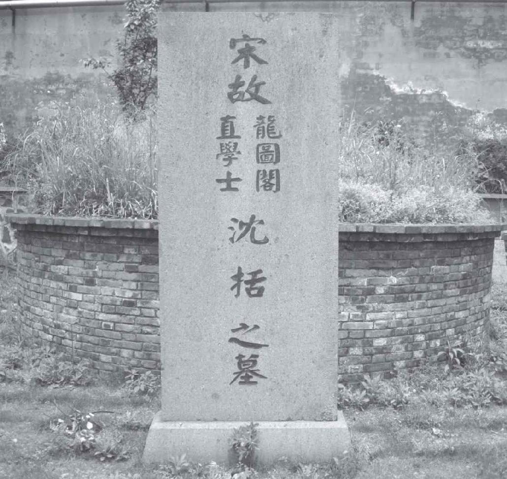
沈括之墓。作者摄于余杭
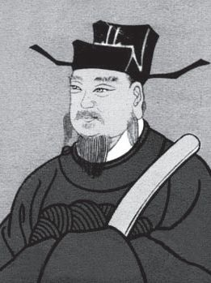
北宋博物学家沈括像
沈括（1031—1095）系进士出身，曾参与文学家王安石（1021—1086）发起的变革，与诗人苏轼（1037—1101）也有交往，后出使辽国，回来后任翰林学士，政绩卓著。他每次旅行途中，无论公务多么繁忙，都不忘记录下科学技术上有意义的事情，堪称中国古代最伟大的博物学家。《梦溪笔谈》几乎囊括了所有已知的自然科学和社会科学知识，例如，他发现了夏至日长、冬至日短；在历法上他大胆提出十二节气，大月31日，小月30日；在物理学上，他做过凹面镜成像和声音共振实验；在地理学和地质学上，他以流水侵蚀作用解释奇异地貌的成因，从化石推测水陆变迁，等等。
现在，我们来谈谈沈括书里有关数学方面的记载。在几何学方面，出于测量的需要，必须确定圆弧的长度，为此他发明了一种局部以直代曲的方法，后来成为球面三角学的基础。在代数学方面，为了求出垒成棱台形状的酒桶的数目（这里酒桶每层纵横均有变化），他给出的是求取连续相邻整数平方和的公式，这是中国数学史上第一个求高阶等差级数之和的例子。沈括还认为数学的本质在于简洁，并指出“大凡物有定形，形有真数”，这与毕达哥拉斯的数学思想颇为接近。
相比之下，我们对与沈括同时代的贾宪（约1010—约1070）所知甚少，只知道他写过一部《黄帝九章算经细草》的著作，可惜已经失传。幸运的是，这部著作里的主要内容200年后被南宋数学家杨辉摘录进他的《详解九章算法》（1261）。此书记载了贾宪的高次开方法，这个方法以一张“开方作法本源图”为基础，它实际上是一张二项式系数表，即（x+a）n （0≤n≤6）展开式各项的系数。
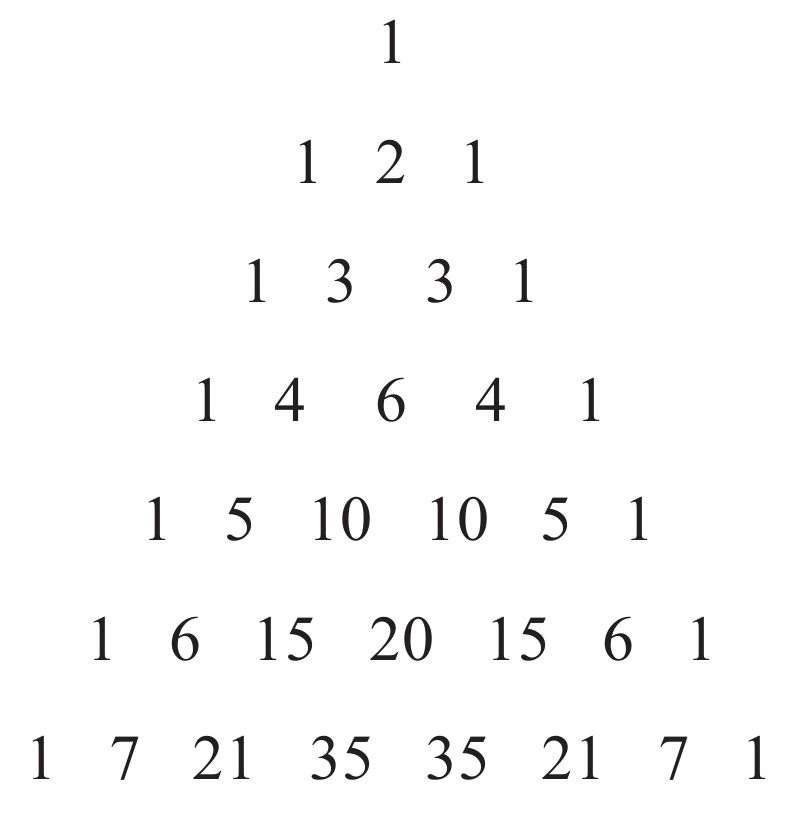
此后，这个三角形就被称为“贾宪三角”或“杨辉三角”，比法国数学家帕斯卡尔的发现早了600多年。不仅如此，贾宪还把这个三角形用于开方根的计算，并取得了意想不到的效果，被称为“增乘开方法”。
早在五代时期，在东北和蒙古一带还有一个契丹族建立的辽国，始于唐朝末年。宋朝建立之初，宋太宗还亲自率兵或派兵攻辽，不久却渐渐转为守势。最后，宋朝只好纳贡示好，开创了一个向番邦定期缴纳财物的先例，沈括曾出使辽国。当时，受辽国欺压的还有一个善于骑马的女真族，生活在黑龙江流域，他们强盛起来后建立了金国，并出兵灭了辽国。之后，金兵又南下进攻北宋的都城卞京（开封），俘虏了宋徽宗和宋钦宗父子。后宋钦宗之弟宋高宗被拥立为皇，迁都杭州（1127），改称临安，史称南宋。
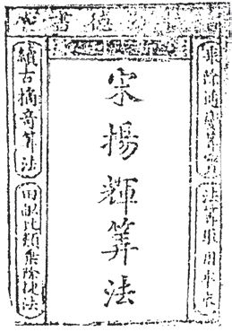
1433年朝鲜出版的《杨辉算法》
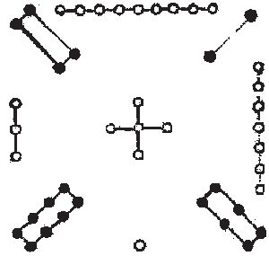
“洛书”的幻方
虽然北方的威胁仍在，但南宋人的生活却过得有滋有味，在经济、文化上甚至更为繁荣。数学家杨辉和沈括同乡，也是临安（杭州）人，虽然他的生卒年不详，但我们知道他生活在13世纪，并在台州、苏州等地做过地方官，业余时间研究数学。从1261年到1275年的这15年间，杨辉独立完成了5部数学著作，包括前文提到的《详解九章算法》。他的书写得深入浅出，走到哪里都有人向他请教，因此他也被视为一位重要的数学教育家。
在前文中提到的贾宪的增乘开方法之后，杨辉接着举了一个实例，说明它是如何用来解四次方程的。这是一种高度机械化的方法，适用于解任意次方程，与现代西方通用的霍纳算法（1819）基本一致。此外，杨辉还利用“垛积法”导出了正四棱台的体积计算公式，由于捷算法的需要，他（在中国）492率先提出了素数的概念，并找出了从200到300之间的全部16个素数。当然，杨辉对素数的研究远远落后于欧几里得，无论在时间上还是完整性上。
不过，杨辉最有趣的数学贡献应该在幻方方面，古人称之为纵横图。谈及幻方（Magic Square），它最早源于中国，在《易经》这部我国最古老的典籍里就有两幅分别叫“河图”和“洛书”的数字图表，传说是治水的大禹于公元前2200年左右在黄河岸边的一只龙马和洛水中的一只神龟背上所见。“河图”是五行数，纵横各5个数字排列，中间共同的数是5。“洛书”用阿拉伯数字表示就是
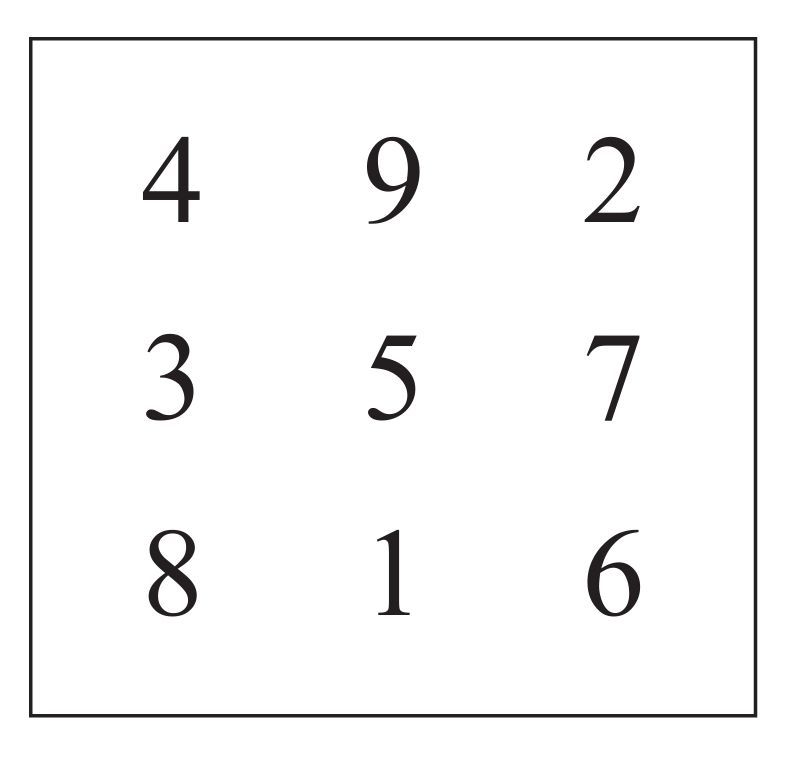
在这张表中，各行、各列或对角线上的三个元素相加均为常数。在13世纪以前，中国数学家并没有认真对待它，只把它看成一种数字游戏，甚至觉得它笼罩着一层神秘色彩。杨辉却孜孜不倦地探索幻方的性质，他以自己的研究成果证明，这种图形是有规律的。
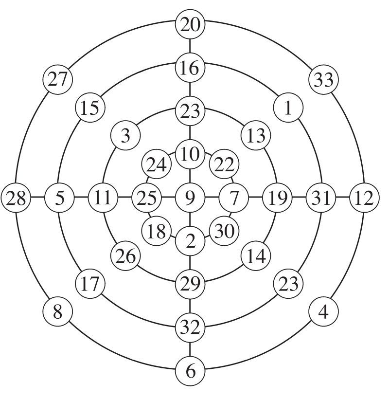
杨辉的圆形幻方简图
杨辉利用等差级数的求和公式，巧妙地构造出了三阶和四阶幻方。对4阶以上的幻方，他只给出了图形而未留下做法，但他所画的五阶、六阶乃至十阶幻方全都准确无误，可见他已经掌握了其中的规律。他称十阶幻方为百子图，其各行各列之和均为505。此外，杨辉还研究了圆形幻方，如上图，4个圆或4条直径上的8个数字之和几乎全是138（各有一个例外为140）。可以推测，这是他受“河图”启发得到的。
在波斯、阿拉伯和印度，均有人研究幻方。尤其是印度人，在这方面有奇妙的发现。在欧洲，幻方的发现和研究虽说要晚许多，但却有一个著名的四阶幻方，它出现在德国版画家丢勒的名作《忧郁》中，我们将在后文提及。值得一提的是，任何一个幻方经过旋转或反射仍是幻方，共有8种等价形式，可归为同一类。不难验证，三阶幻方只有一类，而四阶和五阶幻方分别有880类和275305224类。
相比杨辉对数学研究的持之以恒，秦九韶（1202—1261）的学术生涯比较短暂。他出生在普州（今四川安岳），长年处于兵荒马乱之中，幼时曾随家人居住在京城临安。成年后他再度出川东下，考中进士，在湖北、安徽、江苏、福建等地为官。在南京任职期间，他的母亲去世，秦九韶离任返回湖州。正是在湖州守孝的三年时间里，他刻苦研究数学，写出了传世之作《数书九章》，全面超越了《九章算术》。
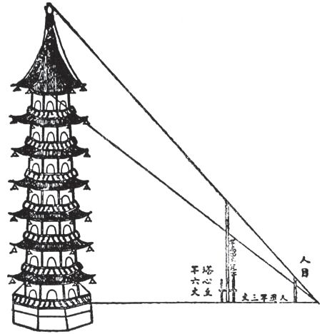
《数书九章》日文版插图
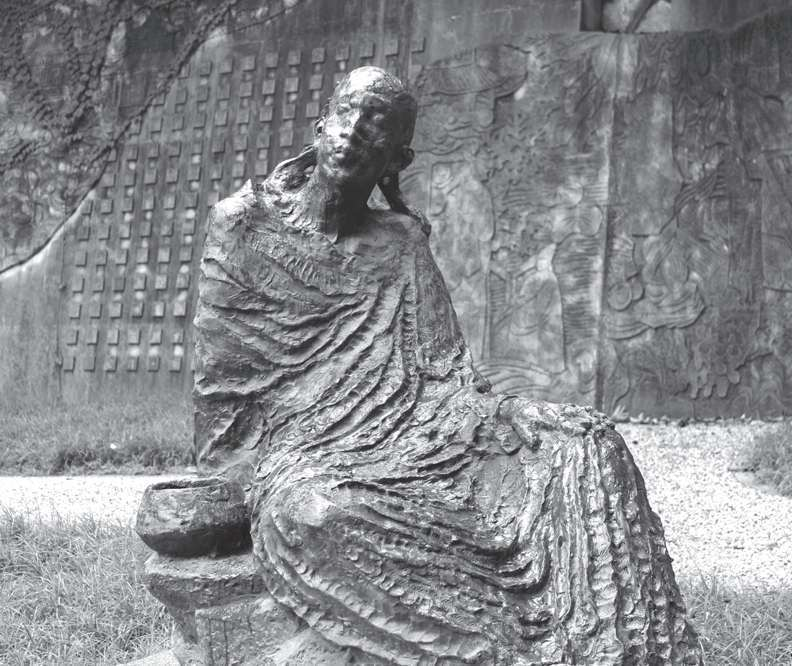
秦九韶塑像。作者摄于南京北极阁气象博物馆
《数书九章》最重要的两项成果是“正负开方术”和“大衍术”。正负开方术或“秦九韶算法”给出了一般高次代数方程，即
a0 xn +a1 xn-1 +···+an-1 x +an =0
的解的完整算法，其系数可正可负。一般地，这类方程求解需经
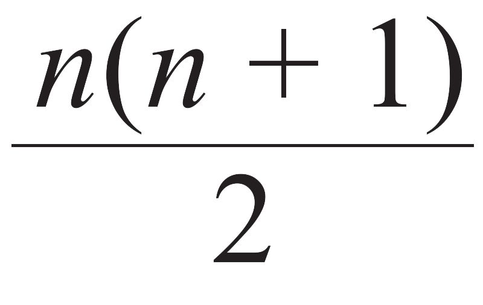
次乘法和n次加法，而秦九韶将其转化为n个一次式的求解，只需n次乘法和n次加法。即便在计算机时代的今天，秦九韶算法仍有重要的意义。大衍术明确地给出了孙子定理的严格表述，用现代数学语言来讲就是，设m1 ，m2 ，…，mk 是两两互素的大于1的正整数，则对任意的整数a1 ，a2 ，…，ak ，下列一次同余式组
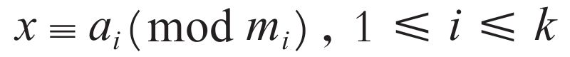
关于模m=m1 m2 …mk 有且仅有一解。秦九韶还给出了求解的过程，为此他需要讨论下列同余式
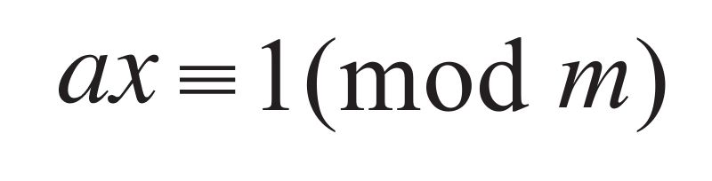
其中a和m互素。他用到了初等数论里的辗转相除法（欧几里得算法），并称其为“大衍求一术”。这个方法是完全正确且十分严密的，它在密码学中有重要的应用。
孙子定理堪称中国古代数学史上最完美和最值得骄傲的结果，它出现在中外每一本初等数论教科书中，西方人称之为“中国剩余定理”，可能是因为中国人贡献太少。而依本书作者看来，此定理应称为“孙子—秦九韶定理”，或“秦九韶定理”。在拙作《数之书》中、英文版中，作者率先称之为秦九韶定理。可是，由于古代中国数学家极少探讨理论，数学主要用来解决历法、工程、赋役和军旅等实际问题，秦九韶没有给出证明。实际上，他还允许模非两两互素，并给出了可靠的计算程序将其转化为两两互素。
在欧洲，18世纪的欧拉和19世纪的高斯（C.F.Gauss，1777—1855）分别对一次同余式组进行了细致的研究，再次获得与秦九韶定理一致的结论，并对模两两互素的情形给予严格的证明。在英国传教士、汉学家伟烈亚力所著的《中国数学科学札记》出版后，欧洲学术界才认识到中国人在这方面的开创性工作，之后秦九韶的名字和“中国剩余定理”也传开了，它在数论以外的其他数学分支里也有重要应用。德国数学史家M.康托尔（M.Cantor，1829—1920）称秦九韶为“最幸运的天才”，比利时出生的美国科学史家萨顿科则赞其为“他那个民族、他那个时代并且也是所有时代最伟大的数学家之一”。
正如杨辉和秦九韶一直生活在南方，宋代的另外两位大数学家李冶和朱世杰则世居北方。李冶（1192—1279）出生在金国统治下的大兴（北京郊外），原名李治，后来发现与唐高宗同名，遂减去一点（如此又恰与唐代四大女诗人之一同名）。李冶的父亲是一位为人正直的地方官，又是一位博学多才的学者，李冶自小受其父亲影响，认为学问比财富更可贵。李冶年轻时便对文史、数学十分感兴趣，后来考中进士，被赞为“经为通儒，文为名家”。不久，蒙古的窝阔台军队入侵，他没有赴陕西上任，改到河南任知事。
公元1232年，蒙古人入侵中原，已经40岁的李冶换上平民服装，踏上漫长而艰苦的流亡之路。两年后金朝灭亡，可是他并没有回到南宋，而是留在蒙古人统治下的北方（元朝）。一是因为南宋和金素来为敌，二是因为忽必烈（元世祖）礼遇金朝的有识之士（曾三度召见他，李冶趁机劝其“减刑罚、止征伐”）。这是李冶一生的转折点，他的将近半个世纪的学术生涯开始了（他比丢番图的寿命长三年）。他返回河北老家，在今石家庄西南郊的封龙山收徒讲学、著书立说，著有随想录《泛说》等，记录了他对各种事物的见解。
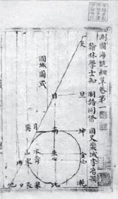
李冶《测圆海镜》插图
李冶一生著述甚多，最让他得意的是《测圆海镜》（1248），此书奠定了中国古代数学中天元术的基础。天元术是一种用数学符号列方程的方法，在《九章算术》中是用文字叙述的方式建立二次方程的，尚没有未知数的概念。到了唐代，已有人列出三次方程，却是用几何方法推导出的，需要高度的技巧，不易于推广。此后，方程理论一直受几何思维束缚，如常数项只能为正，方程次数不能高过三次。直到北宋年间，贾宪等人才找到了高次方程正根问题的基本解法。
可是，随着数学问题的日益复杂，迫切需要一种更一般的、能建立任意次方程的方法，天元术便应运而生。李冶意识到，只有摆脱几何思维模式，建立一整套不依赖于具体问题的普遍程序，才能实现上述目的。为此，他首先“立天元一为某某”，这相当于“设x为某某”，“天元一”表示未知数。他在一次项系数旁置“元”字，从上至下幂次依次递增。在这里，未知数有了纯代数意义，二次方不必代表面积，三次方不必代表体积，常数项也可正可负。至此，困扰中国数学家1000多年的任意n次代数方程的表达就变得非常容易了。
不仅如此，李冶还引进记号○来代替空位，这样一来，传统的十进制便有了完整的数字体系。由于在南方，比《测圆海镜》早一年问世的《数书九章》也采用了同一记号，因此〇号在中国迅速得以普及。除了〇号以外，李冶还发明了负号（在数字上方加画一斜线）和一套相当简便的小数记法，这两种记号的使用分别比欧洲人早了2个世纪和4个世纪，也使得中国的代数学“半符号化”，因为尚缺少等号等运算符号。既然有如此先进的思维，李冶必然是一个有哲学头脑的人，他认为数虽奥妙无穷，却是可以认识的。
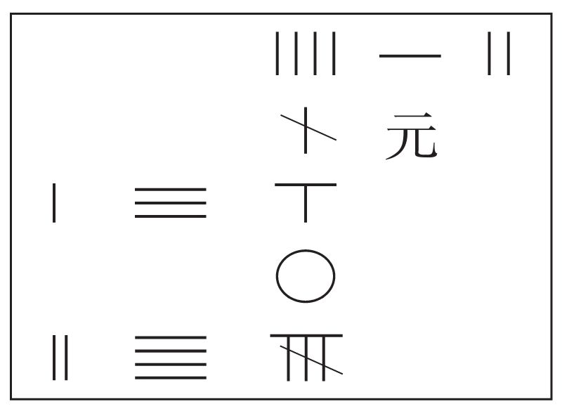
李冶首创在数字上加斜线以表示负数
李冶去世那年，南宋也灭亡了。此前，南北方之间包括数学在内的交流是非常少的。朱世杰（1249—1314）在“宋元数学四大家”中出生时间最晚，因而幸运地得以博采南北两地数学之精华。由于朱世杰一生未入仕途，我们对他的家世一无所知，现有的资料是从友人为他的两部著作《算学启蒙》（1299）和《四元玉鉴》（1303）所写的序言里获得的。与李冶一样，朱世杰也出生在北京附近，但那时元已灭金，北京（燕京）成为重要的政治和文化中心。
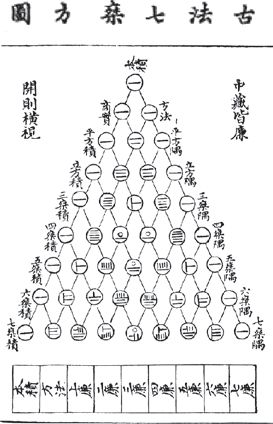
由朝鲜回归重印的《算学启蒙》
在长达20多年的游学之后，朱世杰终于在扬州安定下来，并刊印了他的两部数学著作。《算学启蒙》从简单的四则运算入手，一直讲到当时数学的重要成就——开高次方和天元术，包括了已有数学的方方面面，形成了一个完备的体系，是一部很好的数学启蒙教材。可能受南宋日用和商用数学的影响，以及杨辉著作的启发，朱世杰在书的最前面给出了包括乘法九九歌、除法九归歌等口诀，以便于更多人阅读。
据史载，明世宗朱厚熜（1507—1566）曾学习《算学启蒙》，并与大臣商讨过，可是到了明末这部书却在中国失传。幸亏它出版不久便流传至朝鲜和日本，并被多次注释，对日本的和算尤有影响。直到清朝道光年间（1839），《算学启蒙》才在它的诞生地扬州依据朝鲜的一个版本重新刻印。与《算学启蒙》的通俗性相比，《四元玉鉴》则是朱世杰多年研究成果的结晶，其中最重要的成果是，把李冶的天元术从一个未知数推广至二元、三元乃至四元高次联立方程组，这就是所谓的“四元术”。
朱世杰的四元术是这样的：令常数项居中，然后“立天元一于下，地元一于左，人元一于右，物元一于上”。也就是说，他用天、地、人、物来表示4个未知数，即今天的x、y、z、w。例如，方程x+2y +3z+4w+5xy+6zw=A可以表示成下列图表：
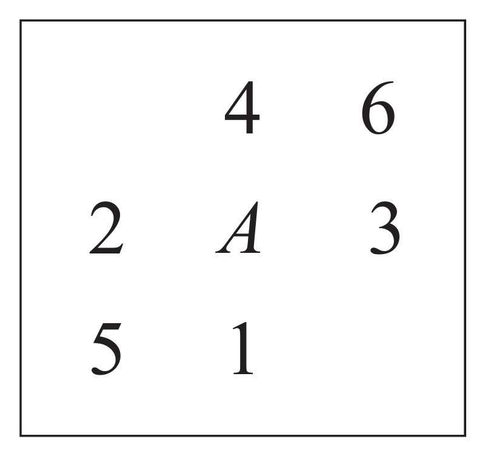
朱世杰不仅给出了这种图表的四则运算法则，还发明了“四元消法”，可以依次消元，最后只留一个未知数，从而求得整个方程的解。在欧洲，直到19世纪，才由西尔维斯特和凯莱等人用矩阵的方法对消元法进行了较为全面的研究。除了四元术以外，朱世杰还对高阶等差级数求和（“垛积术”）做了深入探讨，在沈括、杨辉工作的基础上，给出了一系列更为复杂的三角垛的计算公式，并在牛顿（1676）之前给出了“插值法”（“招差术”）的计算公式。
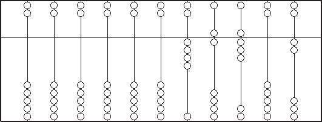
虽说算盘并非中国人的发明，但却在中国得到最广泛的应用
萨顿称赞《四元玉鉴》是“中国最重要的数学著作，也是中世纪最杰出的数学著作之一”。萨顿（G.Sarton，1884—1956）享有“科学史之父”的美名，他被公认为科学史这门学科的奠基人。萨顿精通包括汉语、阿拉伯语在内的14种语言，是中国语言学家赵元任（1892—1982）留学哈佛大学时的导师。“萨顿奖章”是科学史界的最高荣誉，第一个获奖人就是他本人（1955），李约瑟（1968）、以著作《科学革命的结构》闻名的美国人库恩（1982）、牛顿的传记作者威斯特福尔（1985）也曾获此奖项。